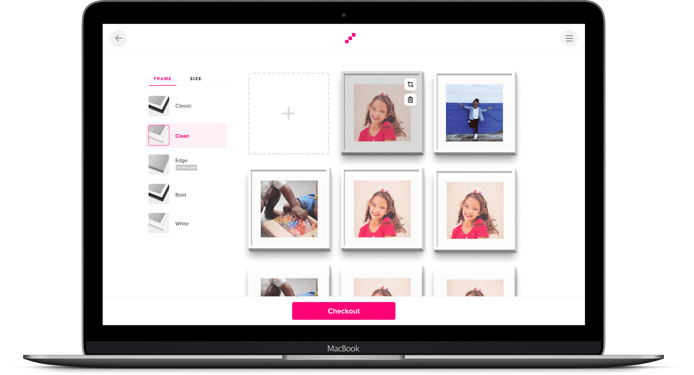

Mixtiles
I joined Mixtiles in 2019 after the company reached product-market fit and decided to build a team and scale. My official role there is a Senior Product Designer, and as the first inhouse designer (now there are more than 5!) I had the chance to touch many areas, including growth, marketing, innovation, and infrastructure.
Currently, I'm working on new key projects such as Mixtiles Art and improving the core UX of our main product.
Responsibilities
- Product Design
- Product Management
- UX Research
Research
During my time in Mixtiles, we were very data-driven and based most of our decisions on research.
We were focusing on a few different areas - growth (how to increase revenue), user experience (how to increase user satisfaction), and new products (what else should we sell?). To answer these questions, we've held dozens of product A/B Tests, talked to customers, sent surveys, watched user recordings, and a lot more.
Key learnings
While many tasks and projects introduced unique problems to solve, there were a few things that we learned that evolved to be my guidelines while designing new features.
Discovering our ‘Aha Moment’
After watching user recordings I saw there’s a very positive reaction when people see their photos inside a frame for the first time. That was basically the moment when our customers decided to purchase. This helped me and the team understand the moment that really 'sells' it for our customers, improve the experience there, and focus on it.
What people love or hate about us
We like to talk to our users and learn about their thoughts or feelings.
With different data collection and research methods, we managed to really become user-centric in our product teams and collect a lot of information that helped us make better product decisions.
How to validate ideas
We learned not to trust our intuition, and not work very hard on a big feature with big chances of failure. We found other ways to test features - one of them is 'fake doors' - where we ship the new feature to a small percentage of users, without fully implementing it. We then track their behavior to learn if this feature would have a positive impact.
How to build products that can change companies in weeks
While our company is mostly successful selling photo frames, our long term goals are much bigger. At my time in Mixtiles I was lucky enough to work on several products from scratch (some of them bigger than others). The experience I gained from that was priceless.
Spotlight Project #1: Onboarding Flow
Using behavioral psychology methods to increase sign ups
One of the goals of the growth team is to increase the number of prospects who convert into entering their emails, in order to increase email marketing revenue later. As part of a task to redesign this feature, I suggested trying a behavioral psychology experiment. Basically - we split the form into three screens. We started with a simple question, 'Who's this for?', followed by 'What's your name?' and made the form feel very easy and non-committing.
The assumption was that users who are already invested in the onboarding process are more likely to make the extra investment of entering their email.
The experiment created an large increase in emails submitted by users, and as a result of that our email marketing channel significantly grew. We later had many successes in generating revenue from prospects using email marketing.
Spotlight Project #2: Core UX
Identifying, prioritizing and resolving unaddressed UX debt piles
Once the company achieved significant growth, we decided we need to put more effort into our core experience which we’ve been neglecting.
My responsibility was creating a roadmap that shows how we can address our most crucial user experience issues, work with product managers to decide on KPIs and principles, designers and developers in order to reach that goal.
As part of this effort we've worked on important features for the company, such as better desktop support, modern user interface, bug fixes and more.